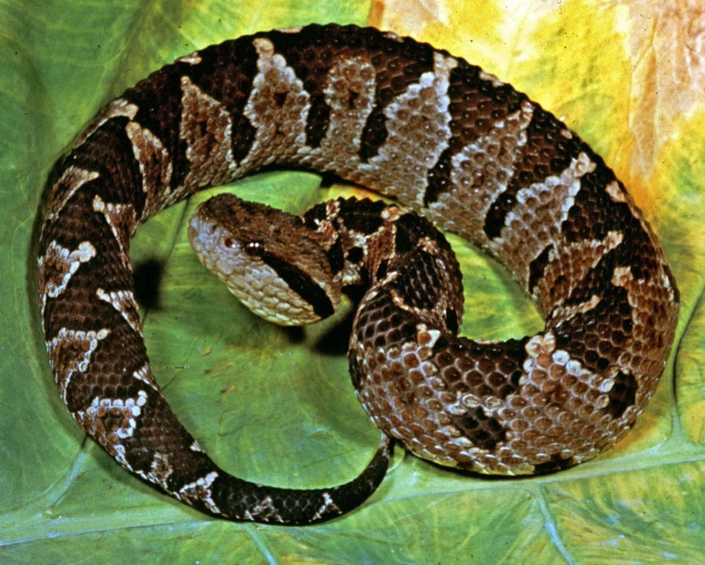

Viper

Vipers are highly venomous snakes known for their long hinged fangs and
fast strike. They are found in many parts of the world, except Antarctica.
Key Characteristics
- Venomous snake
- Long, hollow fangs
- Fast and accurate strike
- Triangular-shaped head
Interesting Facts
- Vipers can fold their fangs when closing their mouth.
- Their venom helps digest prey.
- Most vipers rely on camouflage to hunt.
Vipers are among the most efficient and dangerous predators in the snake
world.